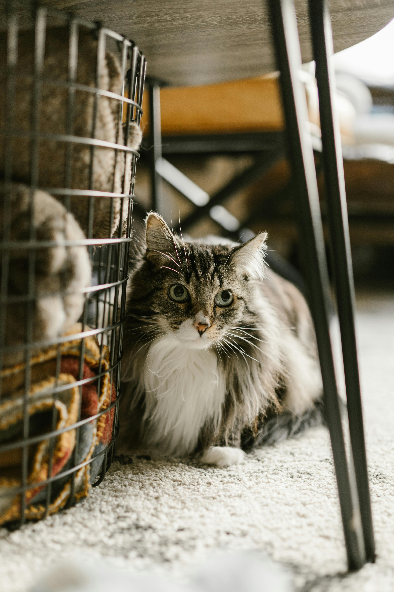
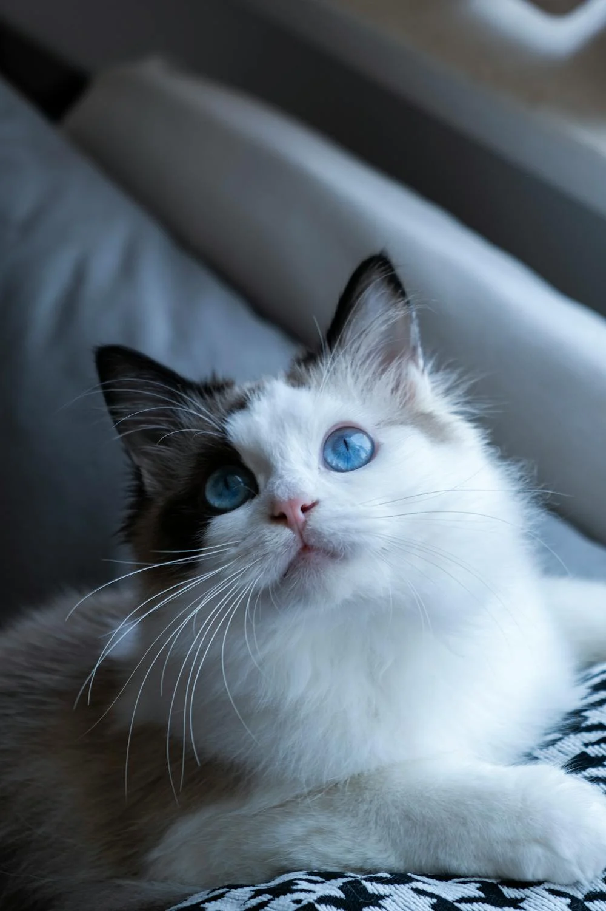
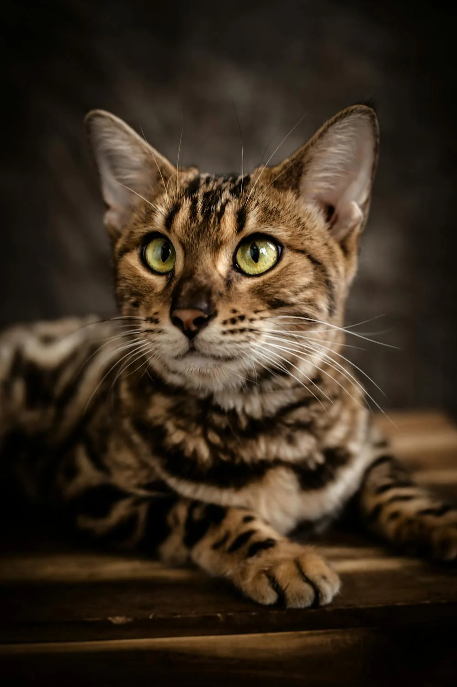

Different Cat Breeds
Cats come in a variety of breeds, each with its own unique characteristics and charm. Here are some popular cat breeds:
-
 Siamese – Known for their striking blue eyes, short coat, and vocal nature, Siamese cats are highly social and affectionate.
Siamese – Known for their striking blue eyes, short coat, and vocal nature, Siamese cats are highly social and affectionate.
-  Maine Coon – One of the largest domesticated cat breeds, Maine Coons have long, thick fur and a friendly, playful demeanor.
-
 Persian – Recognizable by their long, luxurious coat and flat face, Persian cats are known for their calm and gentle nature.
Persian – Recognizable by their long, luxurious coat and flat face, Persian cats are known for their calm and gentle nature.
-  Ragdoll – Ragdolls are large, affectionate cats with striking blue eyes and semi-long fur that tends to be very soft and silky.
-
 Scottish Fold – Famous for their unique folded ears and round faces, Scottish Folds have a sweet and easygoing personality.
Scottish Fold – Famous for their unique folded ears and round faces, Scottish Folds have a sweet and easygoing personality.
-  Bengal – With their wild appearance and sleek, spotted coat, Bengals are active and playful cats that enjoy interactive play.
Each breed has its own special traits and makes a wonderful addition to any home. Whether you prefer a playful companion or a calm lap cat, there is a breed to match your lifestyle.